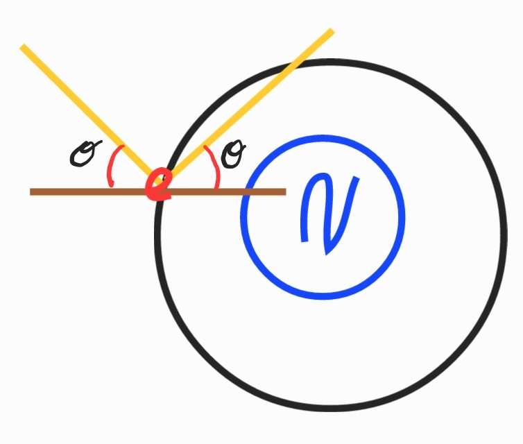

What is Light Reflection?
Reflection occurs when light interacts with a surface and bounces off in a predictable direction. This follows the fundamental Law of Reflection:

Reflection can be understood from two perspectives:
- Wave Perspective: Light behaves as an electromagnetic wave, where each wavefront reflects in an orderly manner, maintaining coherence on smooth surfaces and scattering on rough ones.
- Particle Perspective: Light consists of photons that interact with electrons on the surface, which then re-radiate light in a direction dictated by conservation of momentum.
Forced Oscillation
When low-energy photons hit electrons on the surface of a material, the electrons begin to oscillate and almost instantaneously reradiate the photons. Individual electrons reradiate photons in random directions. However, the smooth distribution of atoms on the material's surface creates a cumulative effect where the probability of reradiation aligns predominantly in a specific direction. This collective behavior, governed by the Conservation of Momentum, gives rise to the law of reflection.
Why Do Smooth Surfaces Reflect Light?
When light hits a smooth surface, the interaction with electrons causes light to be re-radiated in a specific direction. This happens because:
- Wave Perspective: All the tiny scattered waves combine constructively, reinforcing a single outgoing wavefront.
- Particle Perspective: Each photon excites electrons, which then re-emit light in a way that preserves momentum and maintains a uniform reflection angle.
- Uniform Surface: Since the surface is even, all parts reflect light in the same direction.

Why Do Rough Surfaces Scatter Light?
On rough surfaces, the laws of reflection still apply at each microscopic point, but since the surface is uneven, light bounces in different directions. This results in diffuse reflection, where light spreads instead of forming a clear reflection.
- Wave Perspective: The disordered surface disrupts the coherence of wavefronts, causing them to scatter in multiple directions.
- Particle Perspective: Photons interact with electrons at varying angles due to surface irregularities, leading to random reflection angles.
- Conservation of Momentum: Because the surface is uneven, the absorbed and re-emitted photons follow different angles, causing scattered reflection while still preserving the total momentum.

How Water Reflects Light
Water can act as both a smooth and rough surface:
- Wave Perspective: When water is calm, it forms a continuous reflective wavefront; when wavy, reflections scatter due to uneven phase interactions.
- Particle Perspective: Photons reflecting from still water follow strict reflection angles, while turbulent water alters photon interactions, causing diffuse scattering.
- Conservation of Momentum: Whether smooth or wavy, the reflection of photons from water follows momentum conservation laws, ensuring energy and directionality constraints are maintained.
Conclusion
Reflection can be seen as collective scattering in a single direction. Whether considering smooth or rough surfaces, the fundamental principles of light interaction remain consistent, governed by the laws of reflection and conservation of momentum.